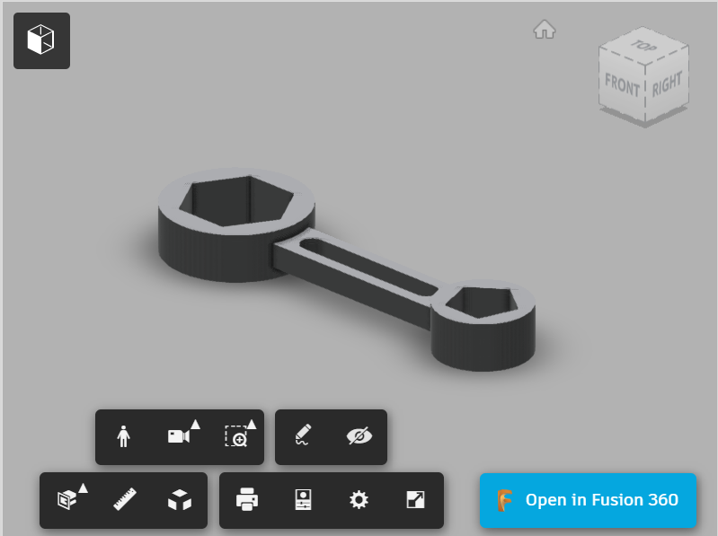

3D Models
Wow everything seems so real...

Creating models with FUSION 360
Following up with previous topic on CAD, FUSION 360 can be used to turn sketches into models. There are 3 ways to do so:
- Extrusion
-creating a 2D outline in one plane and then extruding or extending the outline of the object in the axis perpendicular to that plane.
- Revolution
-creating a 2D outline in one plane/shape and then revolving the outline/shape a number of degrees in the perpendicular plane. This method is ideal for creating cylindrical objects.
- Sculpting
-This method is akin to playing with plasticine. We start with a defined object e.g. block, cylinder, sphere and then by pushing and pulling surfaces we are able to create a 3D model of the object.
In this page I document several models I made with FUSION 360.